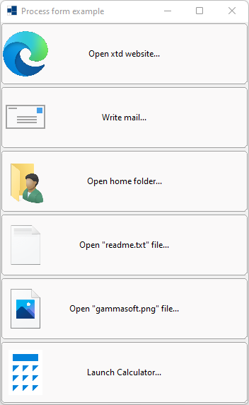
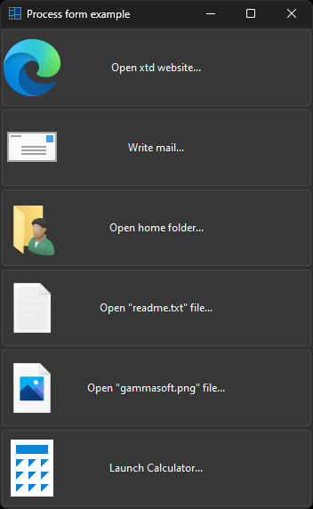
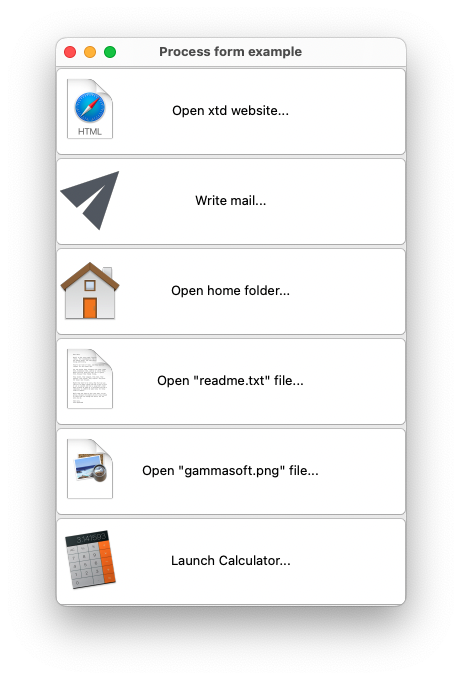
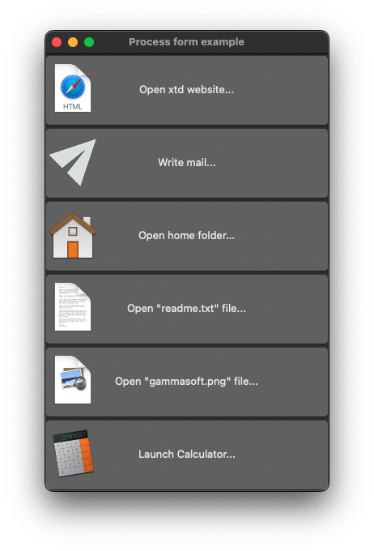
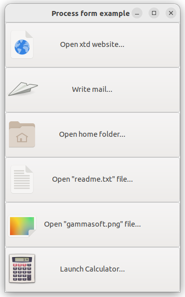
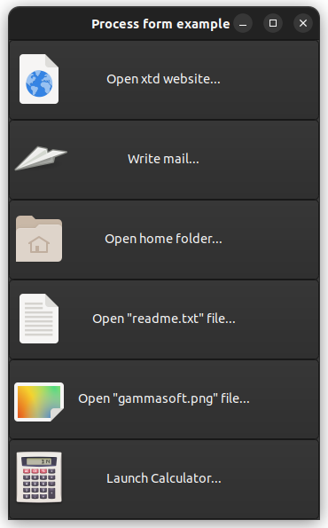

|
xtd
0.2.0
|
Loading...
Searching...
No Matches
process_form.cpp
Shows how to launch process from forms.
- Windows
- 

- macOS
- 

- Gnome
- 

#include <xtd/forms/application>
#include <xtd/forms/button>
#include <xtd/forms/button_images>
#include <xtd/forms/form>
#include <xtd/forms/vertical_layout_panel>
#include <xtd/diagnostics/process>
#include <xtd/invalid_operation_exception>
using namespace xtd;
using namespace xtd::diagnostics;
using namespace xtd::io;
using namespace xtd::forms;
public:
main_form() {
text("Process form example");
controls().push_back(layout_panel);
client_size({350, 540});
layout_panel.controls().push_back_range({xtd_web_button, write_mail_button, open_home_folder_button, open_readme_txt_file_button, open_gammasoft_png_file_button, open_calculator_button});
layout_panel.dock(dock_style::fill);
layout_panel.control_layout_style(xtd_web_button, {size_type::auto_size, true});
layout_panel.control_layout_style(write_mail_button, {size_type::auto_size, true});
layout_panel.control_layout_style(open_home_folder_button, {size_type::auto_size, true});
layout_panel.control_layout_style(open_readme_txt_file_button, {size_type::auto_size, true});
layout_panel.control_layout_style(open_gammasoft_png_file_button, {size_type::auto_size, true});
layout_panel.control_layout_style(open_calculator_button, {size_type::auto_size, true});
xtd_web_button.image_align(content_alignment::middle_left);
xtd_web_button.text("Open xtd website...");
xtd_web_button.click += [] {
process::start("https://gammasoft71.github.io/xtd");
};
write_mail_button.image(button_images::from_name("document-send", drawing::size(64, 64)));
write_mail_button.image_align(content_alignment::middle_left);
write_mail_button.text("Write mail...");
write_mail_button.click += [] {
process::start("mailto:gammasoft71@gmail.com?subject=Hi%20Gammasoft71&body=xtd%20is%20a%20great%20project.%0D%0A%20");
};
open_home_folder_button.image(button_images::from_name("folder-home", drawing::size(64, 64)));
open_home_folder_button.image_align(content_alignment::middle_left);
open_home_folder_button.text("Open home folder...");
open_home_folder_button.click += [] {
process::start(environment::get_folder_path(environment::special_folder::home));
};
open_readme_txt_file_button.image(button_images::from_name("text-x-generic", drawing::size(64, 64)));
open_readme_txt_file_button.image_align(content_alignment::middle_left);
open_readme_txt_file_button.text("Open \"readme.txt\" file...");
open_readme_txt_file_button.click += [] {
file::write_all_text(path::combine(path::get_temp_path(), "readme.txt"), "Tests open file \"readme.txt\" with xtd::diagnostics::process class.\n");
process::start(path::combine(path::get_temp_path(), "readme.txt"));
};
open_gammasoft_png_file_button.image(button_images::from_name("image-x-generic", drawing::size(64, 64)));
open_gammasoft_png_file_button.image_align(content_alignment::middle_left);
open_gammasoft_png_file_button.text("Open \"gammasoft.png\" file...");
open_gammasoft_png_file_button.click += [] {
images::from_name("gammasoft", drawing::size(512, 512)).save(path::combine(path::get_temp_path(), "gammasoft.png"));
};
open_calculator_button.image(button_images::from_name("accessories-calculator", drawing::size(64, 64)));
open_calculator_button.image_align(content_alignment::middle_left);
open_calculator_button.text("Launch Calculator...");
open_calculator_button.click += [] {
if (environment::os_version().is_windows()) process::start("calc");
else if (environment::os_version().is_macos()) process::start("Calculator");
else if (environment::os_version().is_linux()) process::start("gnome-calculator");
};
}
private:
vertical_layout_panel layout_panel;
button xtd_web_button;
button write_mail_button;
button open_home_folder_button;
button open_readme_txt_file_button;
button open_gammasoft_png_file_button;
button open_calculator_button;
};
auto main()->int {
xtd::forms::application::run(main_form());
}
Specifies a set of values that are used when you start a process.
Definition process_start_info.h:37
Stores an ordered pair of integers, which specify a height and width.
Definition size.h:31
static void run()
Begins running a standard application message loop on the current thread, without a form.
Represents a window or dialog box that makes up an application's user interface.
Definition form.h:52
Used to group collections of vertically aligned controls.
Definition vertical_layout_panel.h:29
The exception that is thrown when a method call is invalid for the object's current state.
Definition invalid_operation_exception.h:18
The xtd::diagnostics namespace provides classes that allow you to interact with system processes,...
Definition assert_dialog_result.h:10
The xtd::forms namespace contains classes for creating Windows-based applications that take full adva...
Definition about_box.h:13
The xtd::io namespace contains types that allow reading and writing to files and data streams,...
Definition binary_reader.h:16
The xtd namespace contains all fundamental classes to access Hardware, Os, System,...
Definition system_report.h:17
Generated on Mon Jan 1 2024 09:59:55 for xtd by Gammasoft. All rights reserved.